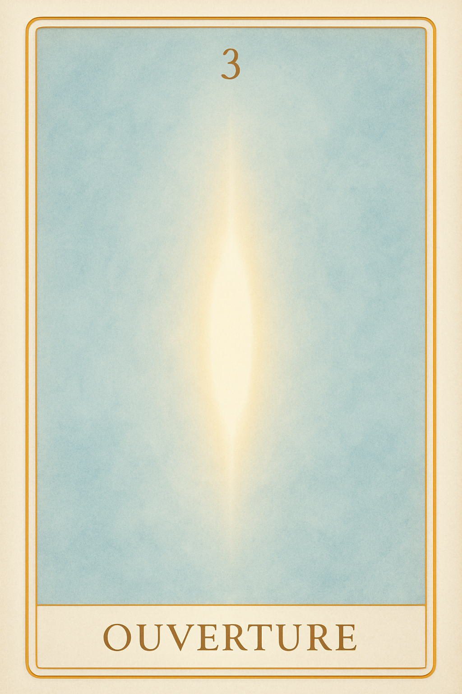
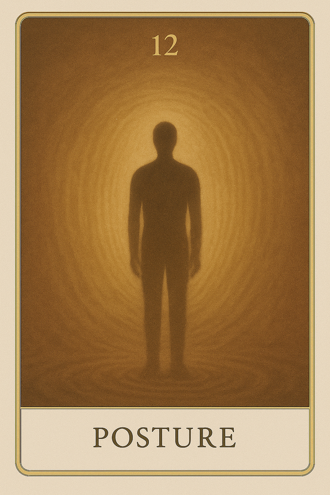
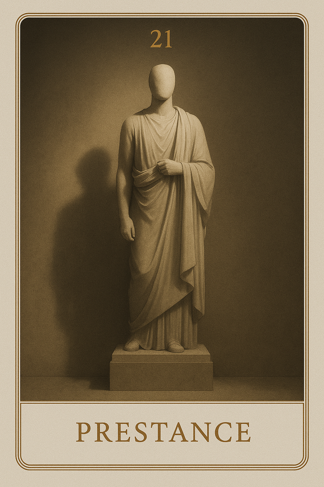
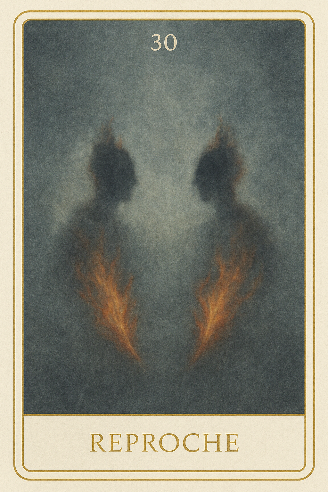
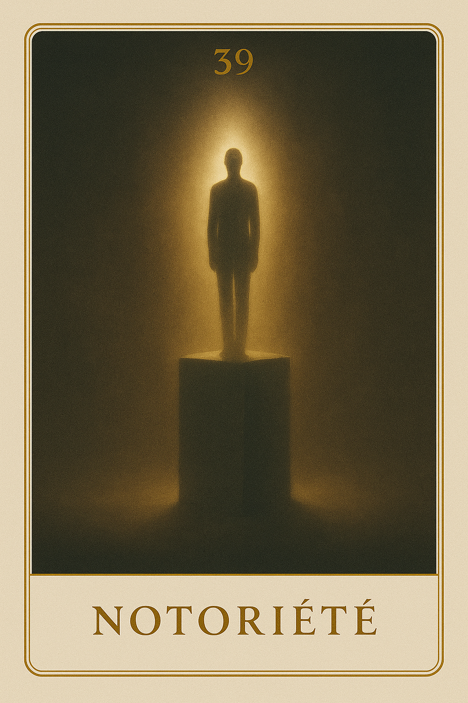
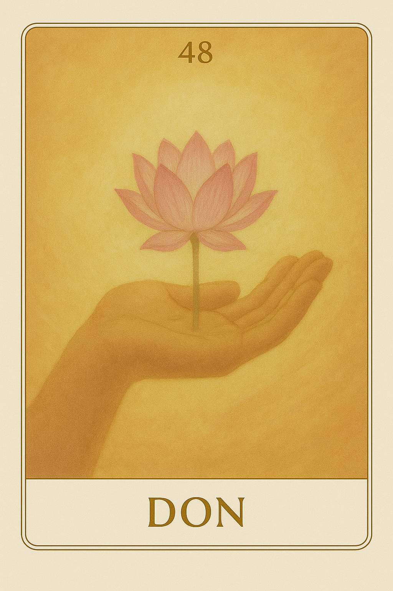
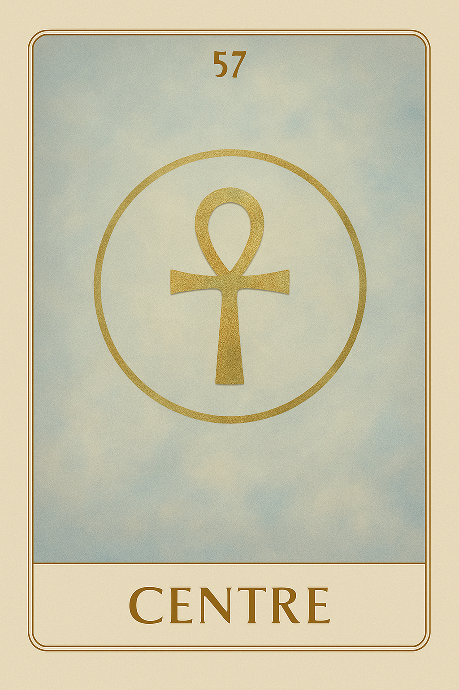
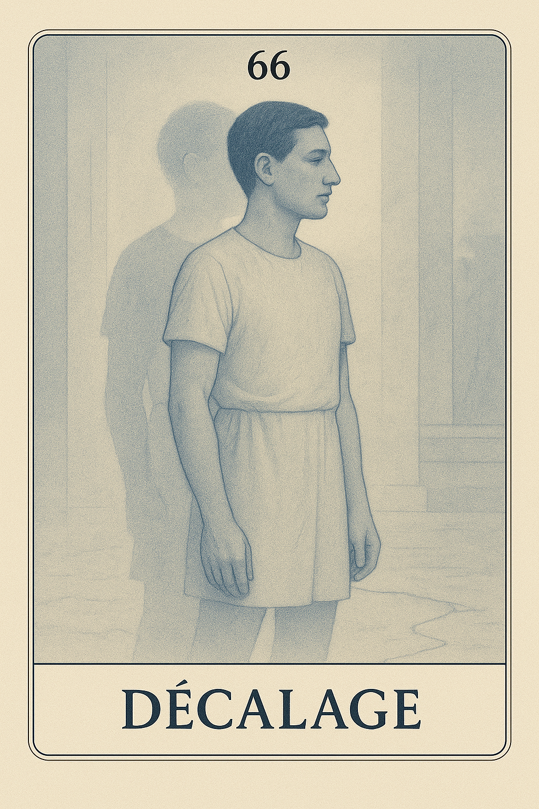

Famille 3 – Amon-Rê (Jupiter)
La famille 3, sous l’influence de Jupiter et d’Amon-Rê, symbolise l’ouverture à l’autre, l’expansion du lien et la capacité à rayonner sans dominer. Elle explore les façons d’habiter la relation avec justesse, et d’exister pleinement en présence de l’autre — sans se perdre, ni imposer.
Carte 3 – Ouverture
Mots-clés : ouverture intérieure, rayonnement personnel, relation à soi et au monde, introspection,
Chiffre caché : 174
Lecture inversée : 4 → 7 → 1
Divinité principale : : Amon-Rê
Planète secondaire : Soleil
Divinité secondaire : Râ
Interprétation de la carte 3 : Ouverture (droite)
Lecture intuitive rapide
Quelque chose en toi commence à s’ouvrir. Ce n’est pas encore un mouvement vers l’autre, mais une permission intérieure. Tu entrouvres la porte de ta présence au monde, sans chercher à plaire, ni à convaincre. C’est une exposition discrète, un souffle qui te rend un peu plus visible, pas pour briller, mais pour être reconnu dans ce que tu es. Rien n’est encore fixé : tu ne montres pas une forme, tu laisses filtrer une lumière. Ce n’est ni un masque, ni un cri : c’est une fissure dans la coquille du dedans.
1. Caractère de la personne
Un espace s’ouvre entre toi et le monde. Tu n’as pas besoin de définir ton rôle, seulement de t’autoriser à être vu. C’est un état fragile mais fertile, où l’être commence à se montrer sans se perdre.
2. Plan affectif
Tu es prêt à sentir l’autre sans te dissoudre. Ce que tu offres n’est pas encore un lien, mais une disponibilité douce. Tu ne sais pas encore ce que tu attends, mais tu es là — accessible, vulnérable sans faiblesse.
5. Plan spirituel
Ton rayonnement naît de l’intérieur. Ce n’est pas un appel, ni une proclamation :c’est une permission que tu t’accordes de ne plus te cacher. Une lumière tranquille commence à traverser ton silence.
Carte 3 : Ouverture (inversée)
1. Caractère de la personne
Tu crains d’être vu, alors tu contrôles. Tu veux maîtriser ce que les autres perçoivent, au lieu de t’ouvrir simplement. Mais la fermeture n’est pas une protection : elle te prive de ton propre rayonnement.
2. Plan affectif
Tu refuses la perméabilité. Tu veux l’amour sans laisser de passage. Mais l’autre ne peut pas te rejoindre si tu restes inaccessible. Il ne s’agit pas de te donner, juste de t’ouvrir à toi en présence de l’autre.
5. Plan spirituel
Tu attends que le monde t’invite à rayonner. Mais personne ne peut ouvrir pour toi. Le chemin commence par un accord intérieur, non par une validation extérieure.
Résumé de la carte 3 : Ouverture
Ouverture est le premier pas vers le dehors. Ce n’est pas encore un lien, ni une forme fixe. C’est un souffle, un espace entrouvert, où tu commences à t’exposer —non pour être reconnu, mais pour cesser de te cacher.
Carte 12 – Posture
Mots-clés : : présence relationnelle, se positionner face à l’autre, lien non verbal, ajustement intérieur, posture émotionnelle
Chiffre caché : 228
Lecture inversée : 8 → 2 → 2
Divinité principale : Amon-Rê
Planète secondaire : Terre
Divinité secondaire : Geb
Interprétation de la carte 12 : Posture (droite)
Lecture intuitive rapide
L’autre est là. Pas forcément proche. Pas forcément connu. Mais suffisamment réel pour que ta présence doive se tenir. Ce que tu ressens n’est pas encore du lien, c’est une tension de place, une invitation silencieuse à reconnaître comment tu t’installes dans la relation. Tu peux reculer. Tu peux occuper tout l’espace. Mais dans les deux cas, ta posture parle pour toi. Elle dit ce que tu ne dis pas encore.
1. Caractère de la personne
Tu n’as rien à prouver. Mais ta façon d’être dit quelque chose. Face à l’autre, ta présence devient une forme visible. Et cette forme révèle si tu es à ta place — ou pas.
2. Plan affectif
Tu es en lien, mais ce lien ne passe pas encore par le cœur. Il passe par la manière dont tu t’approches, te tiens, observes. Avant même de parler, il y a l’art d’être là, simplement, sans surjouer ni t’effacer.
5. Plan spirituel
Tu veux comprendre la relation. Mais ce n’est pas encore le temps du sens. C’est le temps de la justesse du geste, de l’ajustement silencieux, de la présence qui ne cherche pas à dire.
Carte 12 : Posture (inversée)
1. Caractère de la personne
Tu ne sais pas comment te tenir. Tu avances trop. Ou tu recules sans le vouloir. Tu ne regardes pas l’autre : tu surveilles ta propre image. Et dans ce déséquilibre, ta présence devient un bruit de fond.
2. Plan affectif
Tu veux créer du lien. Mais tu ne te poses pas. Tu te montres ou tu te retires sans te reconnaître. Le lien ne naît pas d’un besoin : il naît d’une posture qui ne fuit pas le regard.
5. Plan spirituel
Tu cherches la place juste. Mais tu refuses l’inconfort de l’attente. Ici, le sacré ne s’impose pas. Il t’observe, en silence, jusqu’à ce que tu sois vraiment là.
Résumé de la carte 12 : Posture
Posture est la carte du soi en présence. Pas encore dans l’échange, mais déjà visible, ressenti, reconnu — ou évité. Elle dit :“Avant de parler, tu es. Avant de toucher, tu occupes un espace. Que dit ta posture ?”
Carte 21 – Prestance
Mots-clés : : image de soi, rôle social, masque relationnel, besoin de reconnaissance, posture intérieure
Chiffre caché : 165
Lecture inversée : 5 → 6 → 1
Divinité principale : Amon-Rê
Planète secondaire : Jupiter
Divinité secondaire : Amon-Rê
Interprétation de la carte 21 : Prestance (droite)
Lecture intuitive rapide
Tu tiens ton rôle. Tu connais les codes, les attitudes, les mots qui donnent forme à ce que tu veux renvoyer. Mais cette posture n’est pas toujours toi. Elle peut être un masque élégant, une manière de tenir debout dans le regard des autres, ou une protection. Tu veux être reconnu ? Très bien. Mais à quel prix ? La prestance devient piège quand elle t’éloigne de ton centre.
1. Caractère de la personne
Tu tiens ta place, parfois avec rigueur, parfois avec tension. Ce que tu montres est maîtrisé. Mais cette tenue n’est pas neutre : elle peut devenir contrainte. Observe si ta force apparente te coupe de ce que tu ressens vraiment.
2. Plan affectif
Tu cherches à être perçu comme fort, clair, respectable. Mais cela vient peut-être d’un doute plus profond. Tant que tu n’habites pas vraiment ce que tu montres, tu restes dans une attente. Tu projettes une façade que tu espères vraie.
5. Plan spirituel
Tu crois devoir incarner un rôle, une figure. Et peut-être que ce rôle est juste. Mais attention : la fonction ne suffit pas à faire la vérité. Reste attentif à ce que tu laisses derrière la prestance.
Carte 21 : Prestance (inversée)
1. Caractère de la personne
Tu t’es figé dans une image. Ce que tu montres n’est plus habité. Tu impressionnes, mais tu ne vibres plus. Le monde perçoit l’écart entre ce que tu es et ce que tu affiches.
2. Plan affectif
Tu as besoin de reconnaissance, mais tu passes par la posture. Cela crée une distance invisible. Tant que tu restes dans la forme, tu ne peux pas recevoir ce qui est vrai. L’estime ne peut pas passer par un masque.
5. Plan spirituel
Tu confonds la fonction et la lumière. Tu incarnes peut-être un rôle sacré, mais tu l’as vidé de son centre. Retrouve le feu qui précède la forme.
Résumé de la carte 21 : Prestance
Prestance est la carte de la posture sociale, de l’image maîtrisée, du rôle assumé — parfois au détriment du vrai. Elle dit : “Ce que tu montres est peut-être juste. Mais si tu n’es pas là derrière, qui porte le costume ?”
Carte 30 – Reproche
Mots-clés : : projection émotionnelle, colère intérieure, tension relationnelle, désalignement personnel, blessure non reconnue
Chiffre caché : 192
Lecture inversée : 2 → 9 → 1
Divinité principale : Amon-Rê
Planète secondaire : Mars
Divinité secondaire : Sekhmet
Interprétation de la carte 30 : Reproche (droite)
Lecture intuitive rapide
Tu crois que c’est l’autre. Tu crois que c’est lui, ou elle, ou eux. Tu crois que c’est leur regard, leur absence, leur parole. Mais ce que tu ressens, ce n’est pas un tort : c’est une faille. Ce n’est pas un affront : c’est une douleur. Tu projettes ta tension, ta colère, ton besoin sur quelqu’un qui n’a rien demandé. Tu frappes un miroir en pensant frapper une présence. Et c’est toi que tu vises sans le voir.
1. Caractère de la personne
Tu crois que ce qui te trouble vient de l’autre. Mais c’est ton propre feu, ton propre désalignement. Tu en veux à l’extérieur pour ne pas voir ce que tu ressens en toi. C’est plus facile ainsi.
2. Plan affectif
Tu projettes ton mal-être dans le lien. Tu en attends trop, ou tu accuses trop vite. Ce n’est pas l’amour qui fait mal : c’est l’image que tu t’es construite du lien, et la colère que tu portes quand elle ne tient pas.
5. Plan spirituel
Tu refuses de voir ce qui en toi appelle réparation. Tu préfères pointer l’extérieur, détourner la lumière. Mais ce que tu condamnes parle de toi. Ce que tu juges est une part de toi-même que tu n’as pas encore reconnue.
Carte 30 : Reproche (inversée)
1. Caractère de la personne
Tu ne supportes pas ce que tu ressens, alors tu le projettes. Tu as besoin d’un fautif. Mais tant que tu accuses l’autre, tu ne guéris rien. Tu renforces seulement ton propre rejet.
2. Plan affectif
Tu transformes ton besoin en exigence, ton vide en blâme. L’autre devient le champ de ta frustration. Mais ce que tu cherches, c’est un retour vers toi — pas une justification extérieure.
5. Plan spirituel
Tu te coupes de la vérité en désignant un responsable. Mais l’épreuve t’appartient. La tension que tu ressens est un passage intérieur. Et personne d’autre que toi ne peut le franchir.
Résumé de la carte 30 : Reproche
Reproche est la carte de la colère projetée. Elle ne parle pas de faute, mais de détournement : “Ce que tu crois être une blessure venant de l’autre est une tension en toi. Ce que tu condamnes est ce que tu n’as pas encore reconnu.”
Carte 39 – Notoriété
Mots-clés : : quête de reconnaissance, image sociale, rayonnement personnel, authenticité face au regard, piège de l’apparence
Chiffre caché : 183
Lecture inversée : 3 → 8 → 1
Divinité principale : Amon-Rê
Planète secondaire : Mercure
Divinité secondaire : Thot
Interprétation de la carte 39 : Notoriété (droite)
Lecture intuitive rapide
Tu veux qu’on te voie. Tu veux laisser une trace, occuper une place, être entendu. Ce n’est pas vain : c’est humain. Mais à force de vouloir exister dehors, tu oublies de revenir à toi. Tu ajustes, tu composes, tu cèdes — un peu. Puis beaucoup. Et un jour, tu ne sais plus si ce que l’on applaudit… c’est encore toi.
1. Caractère de la personne
Tu veux briller, et c’est juste. Tu veux occuper ta place. Tu sens que tu as quelque chose à dire, à porter. Tant que tu restes aligné, ce rayonnement t’élève.
2. Plan affectif
Tu veux être reconnu, accepté. Tu offres ce que tu crois être juste. Mais tu ne cherches pas à séduire : tu veux être vu pour vrai. Et ça, c’est rare.
5. Plan spirituel
Tu fais face au monde. Tu apprends à exister dans le regard des autres sans t’y perdre. Tu trouves ta voix, même dans le bruit.
Carte 39 : Notoriété (inversée)
1. Caractère de la personne
Tu veux qu’on t’aime. Tu adaptes ton image, tu calibres ta parole. Mais tu t’éloignes. Tu n’es plus toi : tu es devenu ce qu’on attendait.
2. Plan affectif
Tu veux être validé, accepté. Alors tu montres la bonne version. Tu séduis, tu contrôles, tu t’effaces. Et tu attends d’être aimé pour ce que tu n’es plus.
5. Plan spirituel
Tu confonds lumière et visibilité. Tu veux briller, mais tu ne regardes plus ce qui t’éclaire. Tu cherches l’écho, et tu perds ta propre voix.
Résumé de la carte 39 : Notoriété
Notoriété est la carte de la présence publique et du piège de l’image. Elle ne condamne pas le désir d’être vu, mais elle te rappelle que le monde ne te rendra rien que tu ne t’accordes pas déjà. Elle dit : “Ce que tu donnes à voir te façonne. Et si tu t’éloignes trop pour être reconnu, tu ne sauras plus qui l’est à ta place.”
Carte 48 – Don
Mots-clés : : don de soi, offrande intérieure, générosité sans attente, ouverture du cœur, rayonnement authentique
Chiffre caché : 210
Lecture inversée : 0 → 1 → 2
Divinité principale : Amon-Rê
Planète secondaire : Vénus
Divinité secondaire : Hathor
Interprétation de la carte 48 : Don (droite)
Lecture intuitive rapide
Tu n’attends pas. Tu ne réclames rien. Tu offres ce que tu es — parce que tu es prêt. Ce n’est pas un effort. Ce n’est pas un sacrifice. C’est un mouvement simple, juste, entier. Un don de présence. Un geste qui ne demande pas à être vu. Un cœur ouvert, sans étiquette, sans but. Et c’est cela, précisément, qui touche.
1. Caractère de la personne
Tu ne joues plus à exister. Tu offres ce que tu es, sans bruit, sans masque. C’est un don stable : tu n’attends pas de retour, tu t’ouvres pour être vrai.
2. Plan affectif
Tu n’es pas en demande. Tu laisses circuler ce qui vient de toi, sans condition. Ce n’est pas une soumission : c’est un accord de toi à toi.
5. Plan spirituel
Tu deviens passage. Ce que tu es ne s’exprime pas — il irradie. Ce don silencieux est une offrande à la vie. Pas une négociation.
Carte 48 : Don (inversée)
1. Caractère de la personne
Tu veux qu’on te voie, qu’on reconnaisse ton geste. Mais tant que le don attend une réponse, il n’est pas vrai.
2. Plan affectif
Tu donnes — mais pour être aimé en retour. Et ce déséquilibre abîme la beauté de ton élan.
5. Plan spirituel
Tu penses donner, mais tu te retiens encore. Parce que tu crains de disparaître. Mais le vrai don ne t'efface pas : il te révèle.
Résumé de la carte 48 : Don
Don est la carte de l’ouverture désintéressée, de l’élan juste qui ne cherche ni retour ni reconnaissance. Elle t’invite à offrir ce que tu es sans projection ni défense, à laisser circuler ce qui veut naître de toi. Elle dit : “Ce que tu donnes sans attente ne te diminue pas. Il t’allège. Et c’est dans cet allègement que l’autre peut te rejoindre.”
Carte 57 – Centre
Mots-clés : : alignement intérieur, stabilité émotionnelle, trouver sa place, posture juste, recentrage personnel
Chiffre caché : 219
Lecture inversée : 9 → 1 → 2
Divinité principale : Amon-Rê
Planète secondaire : Saturne
Divinité secondaire : Osiris
Interprétation de la carte 57 : Centre (droite)
Lecture intuitive rapide
Tu veux trouver ta place. Mais ce n’est pas une question de reconnaissance. C’est une question d’alignement. Ce que tu veux montrer n’est pas toujours ce que tu es. Et tant que tu cherches à plaire ou à compenser, tu te désaxes. Ta place se trouve quand tu cesses de chercher. Elle émerge de ton centre.
1. Caractère de la personne
Tu ne te définis plus par le regard des autres. Tu choisis de tenir ta posture. Et c’est cette constance qui te rend lisible.
2. Plan affectif
Tu ne réagis plus. Tu n’attends plus. Tu entres dans le lien sans chercher à t’y perdre. Et ce respect de ton axe fait du bien aux autres aussi.
5. Plan spirituel
Tu ne cherches pas une place. Tu es ta place. Et c’est en revenant à ton centre que tout s’ajuste autour de toi.
Carte 57 : Centre (inversée)
1. Caractère de la personne
Tu cherches encore à être validé. Et cette attente te fait jouer un rôle. Mais plus tu joues, plus tu te perds.
2. Plan affectif
Tu ajustes ta présence en fonction de ce que tu crois qu’on attend. Mais en te modelant, tu te dilues. Et tu perds le lien avec toi-même.
5. Plan spirituel
Tu veux rayonner, mais tu n’es pas encore en toi. Et tant que ton centre n’est pas clair, tout ce que tu émets se trouble.
Résumé de la carte 57 : Centre
Centre est la carte de la justesse intérieure dans le lien au monde. Elle ne demande pas d’être fort, ou parfait. Elle demande d’être présent à soi, stable, lucide — pour pouvoir ensuite être vu, entendu, reconnu sans se trahir. Elle dit : “Tu n’as pas à trouver ta place. Tu as à tenir ton centre. Et c’est cette présence, tenue sans effort, qui te situe naturellement.”
Carte 66 – Décalage
Mots-clés : : désalignement intérieur, rôle social vs soi, authenticité relationnelle, masque émotionnel, vérité intérieure
Chiffre caché : 237
Lecture inversée : 7 → 3 → 2
Divinité principale : Amon-Rê
Planète secondaire : Uranus
Divinité secondaire : Maât
Interprétation de la carte 66 : Décalage (droite)
Lecture intuitive rapide
Tu es là, avec les autres. Tu parles, tu participes, tu prends ta place. Mais quelque chose ne sonne pas juste. Ce que tu dis… n’est pas tout à fait ce que tu penses. Ce que tu montres… n’est pas exactement ce que tu ressens. Et peut-être que les autres ne s’en rendent pas compte. Mais toi, tu le sens. C’est un décalage discret, mais essentiel. Un désalignement entre le rôle et la vérité. Entre la forme et le fond. Entre ce que tu incarnes — et ce que tu es.
1. Caractère de la personne
Tu tiens un rôle. Il te ressemble… mais ce n’est pas tout à fait toi. Tu es fonctionnel, présentable, compris. Mais ce que tu veux dire — profondément — ne passe pas.
2. Plan affectif
Tu es dans le lien, mais tu n’es pas dedans. Tu dis les mots justes, mais ils sonnent creux. Le lien est là, mais il flotte : ce n’est pas le bon étage.
5. Plan spirituel
Ce que tu montres ne suffit plus. Ce n’est pas faux. Ce n’est pas triché. Mais c’est désaligné. Et ça crée du bruit dans ta vérité.
Carte 66 : Décalage (inversée)
1. Caractère de la personne
Tu vis à travers un masque. Tu veux plaire, être reconnu. Mais à force de t’adapter, tu t’es déplacé de toi-même. Et tu ne sais plus comment revenir.
2. Plan affectif
Tu veux que le lien fonctionne. Mais il est construit sur un malentendu : tu n’y es pas entièrement. Et l’autre sent cette absence.
5. Plan spirituel
Tu continues de t’exprimer. Mais tu parles depuis une place que tu n’habites plus. Il est temps de te recentrer — avant que la parole ne devienne mensonge.
Résumé de la carte 66 : Décalage
Décalage est la carte du désalignement entre toi et ce que tu montres. Tu n’es pas dans le faux. Mais tu n’es plus dans le vrai. C’est une zone d’entre-deux : où la forme est encore là, mais la présence s’est déplacée. Elle dit : “Ce que tu montres ne ment pas — mais ce n’est plus toi. Reviens dans ton axe. Ou le lien se videra de son sens.”
Carte 75 – Justesse

Mots-clés : : justesse intérieure, posture alignée, vérité relationnelle, présence authentique, équilibre personnel
Chiffre caché : 201
Lecture inversée : 1 → 0 → 2
Divinité principale : Amon-Rê
Planète secondaire : Planète inconnue
Divinité secondaire : Sia
Interprétation de la carte 75 : Justesse (droite)
Lecture intuitive rapide
Tu t’es montré. Tu as parlé, agi, partagé. Tu as tenu ta place parmi les autres, dans le monde, dans le lien. Mais aujourd’hui, ce n’est plus ce que tu fais qui importe. C’est comment tu es. Tu n’as plus besoin d’occuper. Tu n’as plus besoin d’impressionner, ni de contrôler. Tu es là — comme il faut, où il faut, ni trop, ni pas assez. C’est une posture nue, silencieuse, issue du dépouillement. Ce n’est pas la conformité. C’est la justesse intérieure qui s’est ajustée au lien.
1. Caractère de la personne
Tu ne sur-joues plus. Tu es à ta place. Ni en retrait, ni en force. Et c’est cette présence alignée qui parle pour toi.
2. Plan affectif
Le lien devient clair, parce que tu ne veux plus le forcer. Tu es dans l’écoute, la clarté, la présence nue. Et cela suffit.
5. Plan spirituel
Tu ne vis plus selon l’image que tu projetais. Tu vis selon un axe intérieur. Et c’est cela qui crée la justesse autour de toi.
Carte 75 : Justesse (inversée)
1. Caractère de la personne
Tu veux encore prouver, encore être validé. Mais cette posture te fatigue. La vraie place est celle où tu n’as rien à montrer.
2. Plan affectif
Tu cherches à trouver ta position dans le lien. Mais tu ne peux pas être juste tant que tu veux tenir un rôle. Pose-toi. Écoute.
5. Plan spirituel
Tu crois devoir incarner un idéal. Mais l’idéal, c’est toi, présent et nu, sans décor. C’est cette vérité qui est reçue.
Résumé de la carte 75 : Justesse
Justesse est la carte de la posture ajustée, celle qui ne cherche ni à séduire ni à disparaître, celle qui naît du vide intérieur laissé par la chute des rôles. Elle ne parle pas d’effort — elle parle d’une évidence posée, dans le lien, dans la présence, dans l’être. Elle dit : “Tu n’as plus à forcer. Tu n’as plus à t’adapter. Sois là, dans l’axe. Ce que tu es suffi.”